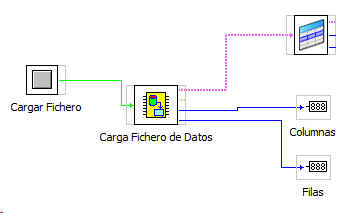

CARGA FICHERO DE DATOS
Este bloque se enccarga de abrir y cargar un fichero de datos que este guardado en el disco duro.
Cuando se ejecuta mediante la orden "Cargar Fichero" (booleana) este enttega en su salida:
Datos String (2D str): Matriz 2D de los datos leido
Datos Double (2d str): Matriz 2D de los datos en formato dbl
nº de Columnas: Numero de columans de la matrizç
nº de Filas de la Matriz
Ejemplo de montaje:
